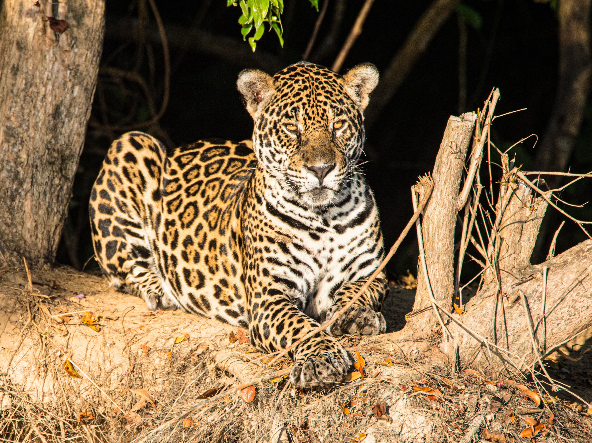

3 Informações sobre a Arara Azul

-
Distribuição e habitat: A onça-pintada é encontrada em diferentes habitats da América do Sul e Central, incluindo florestas tropicais, savanas e pântanos. Ela pode ser encontrada em países como Brasil, México, Argentina, Colômbia e Belize.
-
Características físicas: A onça-pintada possui uma aparência marcante, com uma pelagem amarelo-dourada coberta por rosetas escuras, que lhe dão o nome de "pintada". Ela tem uma estrutura muscular poderosa, corpo robusto e uma cabeça larga. Os machos são maiores que as fêmeas, podendo atingir até 2,7 metros de comprimento, incluindo a cauda, e pesar até 100 kg.
-
Alimentação: A onça-pintada é um predador de topo da cadeia alimentar e possui uma dieta variada. Sua alimentação consiste principalmente de mamíferos, como capivaras, veados, porcos-do-mato e antas. Elas também podem caçar jacarés, tartarugas, peixes e aves.